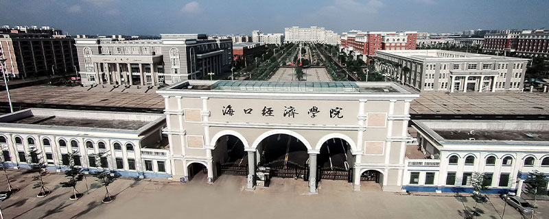
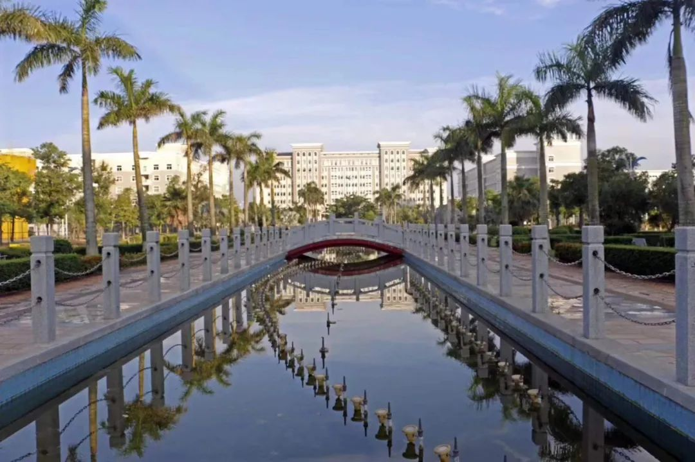
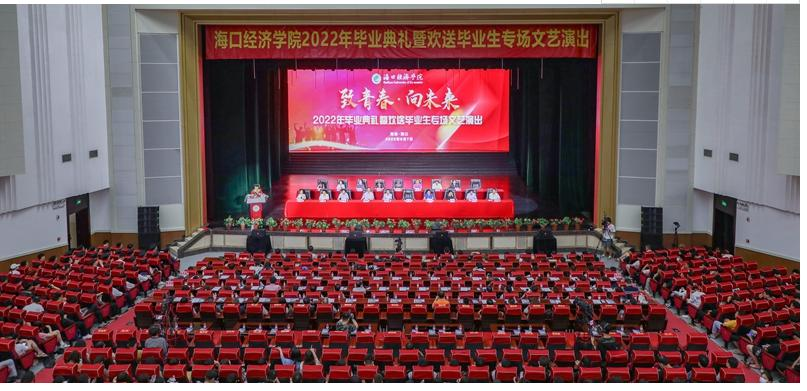
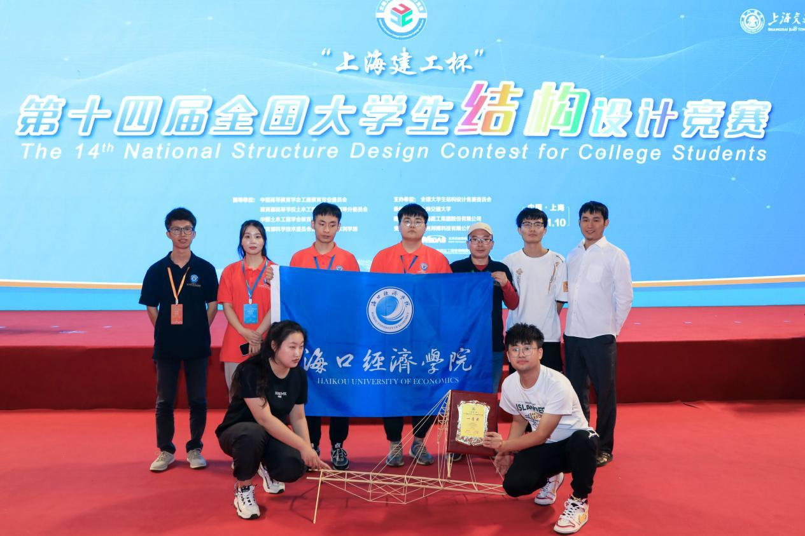
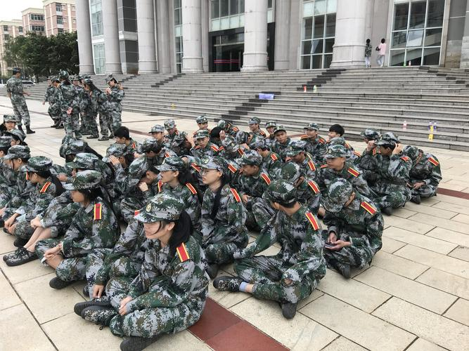

- 
关于海经
海口经济学院（Haikou University of Economics），位于海南省海口市，简称“海经”，是一所以经济、管理类专业为主，文、理、工、艺术等并存的多科性全日制普通本科院校，是海南省第一所独立设置的民办本科高校。
学校创办于1974年，历经海口职业大学、海口经济职业技术学院等发展阶段，2004年被教育部、建设部确认为国家建设类技能型紧缺人才培养试点高校，于2008年3月经教育部批准升格为本科院校，2012年5月通过学士学位授予权评审，成为学士学位授予单位。2021年6月，经研究并请示教育部同意，海南省教育厅确定海口经济学院为第一批省级示范应用型本科高校。
截至2022年12月，学校占地面积约1800亩，总建筑面积为73.53万平方米；总投资逾30亿元，教学科研仪器设备总值1.626亿元，馆藏纸质图书167.3万余册，电子书刊225.7万册；设有16个二级学院、2个教学部，开设53个本科专业和52个专科专业；有教职工1706名，全日制在校生23515人，其中本科生17155人。
活动相册
- 
学校风景
- 
毕业典礼
- 
获奖荣誉
- 
军训